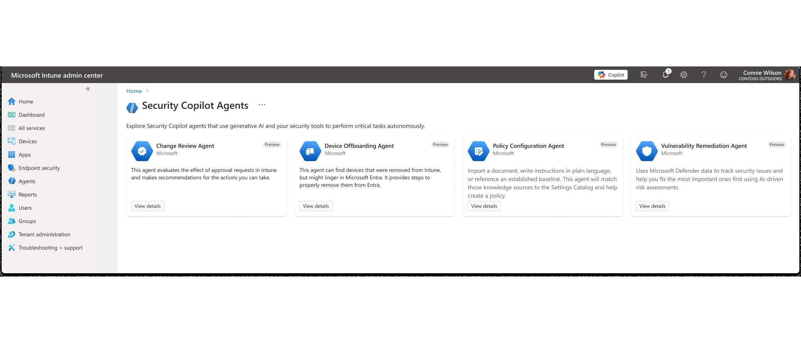
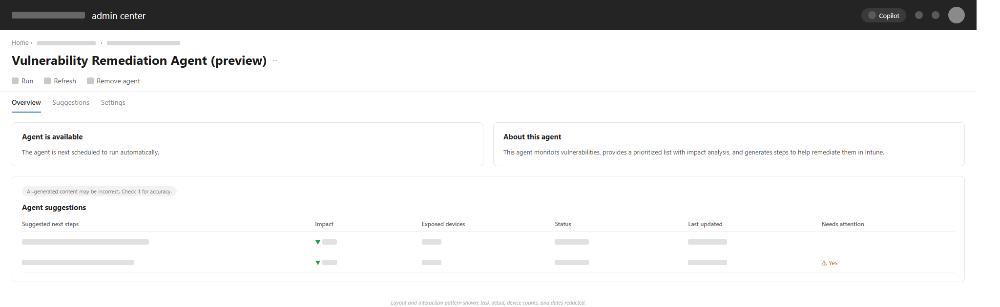
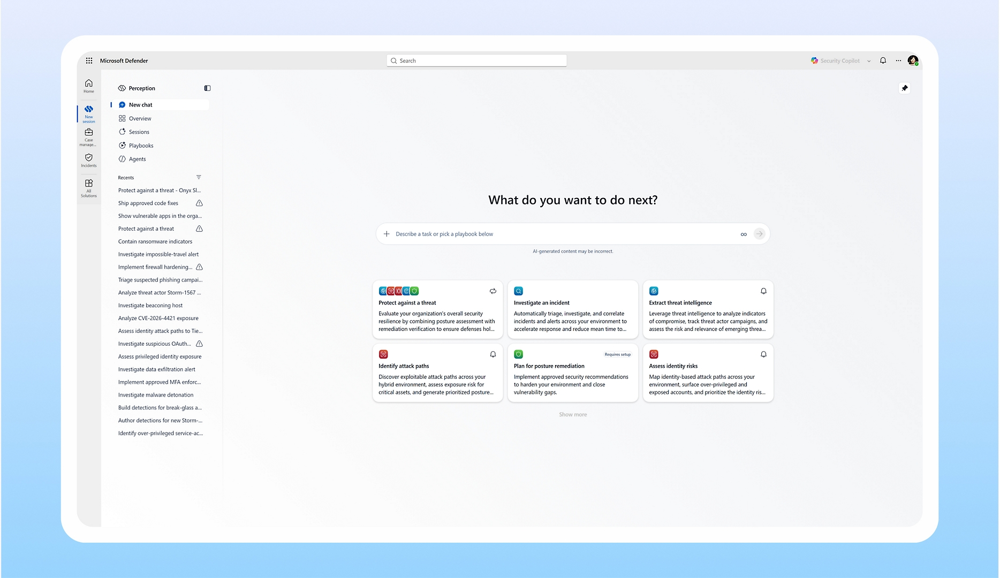

Three chapters, one story — plus a case study in complete lifecycle ownership
The first three case studies are chapters in the same arc: bringing agents into Intune as a managed system, going deep on a flagship agent, and extending that thinking into a broader multi-agent security system. The fourth stands apart — a different kind of case study, showing what it looks like to own a product's admin experience end to end.
The agent story

Agents as a Managed System

CVE Vulnerability Remediation Agent

Extending Agents Into a Coordinated, Multi-Agent System
Complete lifecycle ownership
The chapters above show deep, focused execution on a fast-moving problem. This one shows the other half of the range: taking a brand-new product's admin experience from pre-launch all the way through general availability and ongoing management — provisioning, health monitoring, troubleshooting, and the shared-use model that came after.